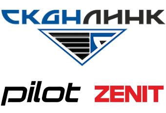

Материал компании

MITEX 2026 · Беларусь · Стенд 7D805
СКАНЛИНК, ООО
Карточка проверена 10 ноября 2026, 09:25 · Источник ↗ · Снимок оригинальной карточки ↗
О компании
ООО «СКАНЛИНК» — белорусская компания, работающая на рынке с 2000 года. Компания специализируется на поставках силовой, садовой и мототехники, развивает собственное производство и реализует проекты для промышленного и аграрного сектора. Одно из ключевых направлений деятельности — импорт и дистрибуция продукции ведущих мировых производителей (HONDA, RATO, Kress, AODES, GREENWORKS, Koshin, Ital, Shindaiwa, Toyama). СКАНЛИНК осуществляет поставку техники и оборудования, обеспечивает гарантийное и послегарантийное сервисное обслуживание, поставку запасных частей и техническую поддержку. Компания также развивает собственные производственные направления. PILOT — линейка тяжёлых мотоблоков и навесного оборудования, разработанная с учётом требований к надёжности, ремонтопригодности и доступности комплектующих. ZENIT — бренд масел и смазочных материалов, выпускаемых более 10 лет. Ассортимент включает моторные, трансмиссионные, гидравлические и специализированные масла для сельскохозяйственной, строительной, коммерческой и промышленной техники. Помимо поставки готовой продукции, СКАНЛИНК реализует проекты по организации производства изделий под техническое задание заказчика, включая подбор производителя, сопровождение производства, контроль качества и организацию поставок. Компания сотрудничает с дилерскими сетями, промышленными предприятиями, агропромышленными организациями, строительными компаниями и государственными учреждениями, участвует в тендерных и конкурсных процедурах и обеспечивает комплексное сопровождение поставляемой продукции.
Контакты
Все контактные сведения из карточки
Контакты Телефон: +375 17 234-99-99 E-mail: opt@scanlink.by Адрес: 220000, Беларусь, Минск, Минск, 4-ый пер. Монтажников, 5-16 Веб-сайт: https://motosila.by E-mail: opt@scanlink.by Телефон: +375 17 234-99-99
Все рубрики участника
Mitex - Рубрикатор
- 2. Садовая техника, инструмент, инвентарь, оборудование, расходные материалы и насосы
Зал
- Зал № 7
Участник выставки
- MITEX
Фотографии и изображения
Видео, каталоги и документы
Материал компании
PILOT_tractors_2026.pdf
Открыть у участника ↗Материал компании
ZENIT_IND_2026.pdf
Открыть у участника ↗Материал компании
zenit_SAD_2026.pdf
Открыть у участника ↗Каталог продукции участника
Материалы каталога
Мотоблоки PILOT Масла и смазочные материалы ZENIT
Материалы каталога
Мотоблоки PILOT Производство мотоблоков тяжелого класса PILOT (Республика Беларусь) PILOT_tractors_2026
PILOT_tractors_2026
PILOT_tractors_2026 Каталог моделей мотоблоков PILOT Вложения PILOT_tractors_2026.pdf 14.07.2026 4 3.66 MB
Материалы каталога
Масла и смазочные материалы ZENIT Производство масел и смазочных материалов ZENIT (Республика Беларусь) ZENIT_IND_2026 zenit_SAD_2026
ZENIT_IND_2026
ZENIT_IND_2026 Каталог масел и смазочных материалов ZENIT для тяжелой техники Вложения ZENIT_IND_2026.pdf 14.07.2026 2 3.05 MB
zenit_SAD_2026
zenit_SAD_2026 Каталог масел и смазочных материалов ZENIT для садовой техники Вложения zenit_SAD_2026.pdf 14.07.2026 1 2.32 MB
Новости из карточки
Новость участника
23.07.2026 10:55 PILOT New Sich: мотоблоки тяжёлого класса на MITEX 2026 Компания ООО «Сканлинк» (Республика Беларусь) представит на выставке MITEX 2026 линейку мотоблоков тяжёлого класса PILOT New Sich и почвенную фрезу PILOT SMC1-00.010. Стенд компании 7D8 будет работать с 10 по 13 ноября в МВЦ «Крокус Экспо», Москва. Мотоблоки PILOT - единая тяговая система PILOT New Sich - линейка мотоблоков, спроектированных для регулярной работы под нагрузкой: длительная вспашка, обработка плотных грунтов, работа с навесным оборудованием и прицепом. Ключевое отличие от большинства аналогов - согласованность всех элементов тяговой цепи: двигатель, сцепление, трансмиссия, масса и колёса рассчитаны как единая система. Результат - стабильная тяга порядка 1000 Н в рабочих режимах без пробуксовки и перегрева узлов. Мотоблоки PILOT рассчитаны на непрерывную работу 4–6 часов при температуре окружающей среды до +35 °C и обработку почвы на глубине до 25 см. Три модели на единой платформе На стенде будут представлены три модификации мотоблока: PILOT R390 — двигатель Rato R390, 13 л.с., крутящий момент 25 Нм. Оптимальный баланс мощности и ресурса для регулярной сезонной работы на участках средней сложности. Доступна модификация с электростартером. PILOT R420 — двигатель Rato R420, 15 л.с., крутящий момент 26,5 Нм. Дополнительный запас тяги для работы на плотных и тяжёлых грунтах, глубокой вспашки и интенсивной эксплуатации с навесным оборудованием. Доступна модификация с электростартером. PILOT GX390 — двигатель Honda GX390, 13 л.с., крутящий момент 26,5 Нм. Профессиональная версия с максимальным моторесурсом 3000+ часов. Предназначена для ежедневной работы в условиях, где простой техники недопустим. Все модели построены на единой усиленной платформе: многодисковое сцепление Ø120 мм в масляной ванне, первичный вал Ø20 мм, шестерёнчатая коробка передач с корпусом из чугуна СЧ-25, дифференциал с принудительной блокировкой, колёса 7.00-12, масса 198–200 кг. ВОМ 1200 об/мин совместим с навесным оборудованием МТЗ. Почвенная фреза PILOT SMC1-00.010 В экспозицию также войдёт почвенная фреза PILOT SMC1-00.010 — навесное оборудование для рыхления и обработки почвы при подготовке к посеву, измельчения растительных остатков и межрядной обработки. Глубина обработки — 12 см, ширина захвата — 61 см. Производительность на лёгких почвах — до 0,18 га/ч. Фреза совместима со всеми моделями PILOT через стандартный ВОМ и подходит для навесного оборудования МТЗ. Сферы применения Мотоблоки PILOT New Sich ориентированы на фермерские и личные подсобные хозяйства, агропредприятия малого и среднего масштаба, организации, эксплуатирующие технику в режиме регулярных нагрузок. Техника применяется для вспашки и фрезерования почвы, транспортных работ с прицепом, работы с косилкой, снегоуборщиком и другим совместимым навесным оборудованием. Гарантия и сервис ООО «Сканлинк» обеспечивает гарантийное и послегарантийное обслуживание, поставку оригинальных запасных частей и расходных материалов. Компания является производителем и осуществляет прямую техническую поддержку без посредников.